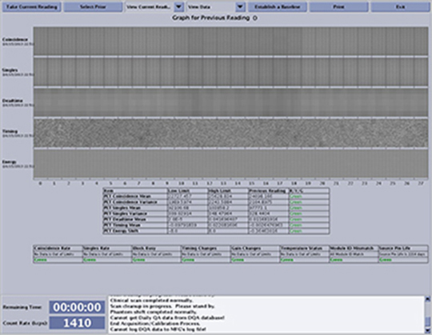
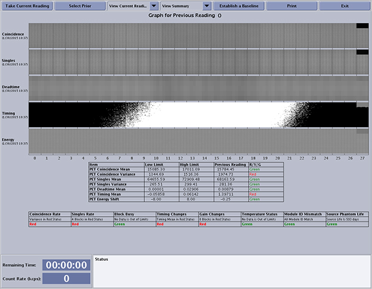
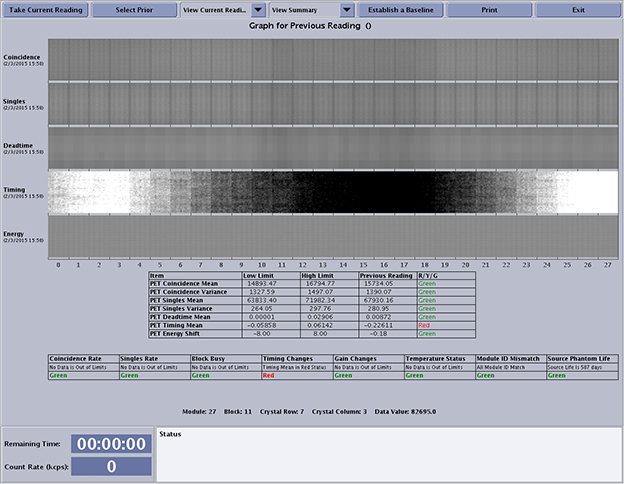
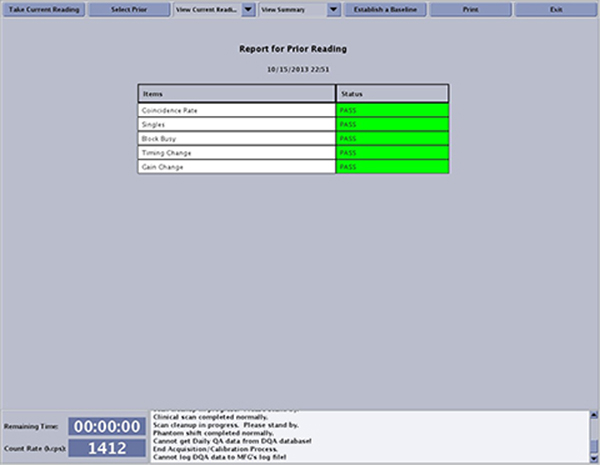
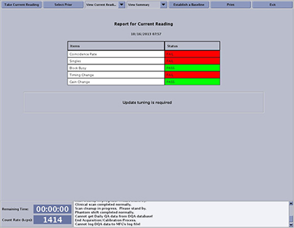

- 00000018WIA306A6030GYZ
- id_123740191.7
- Jan 28, 2020, 12:04:04 PM
Daily QA Theory and Example Scans
Daily Quality Assurance Theory
The Daily Quality Assurance (DQA) program quantitatively monitors the image quality of the scanner over time. Setting the baseline benchmarks current module operation. DQA scans should be done by the hospital on a daily basis. The DQA scan run by the hospital will be compared to the last DQA baseline that was accepted on the system. A bad DQA baseline could lead to unnecessary troubleshooting of the system.

| Notice | |
|---|---|
The red, yellow, or green indicators on the scan results show the viability of the calibration preformed. All values in the above illustration are indicated in the green color, which means the scan passes the range of values set in the software. The information should be reviewed for both shifts in the averages (indicated with colors in the table) and local defects, visible as stripes or marks in the coincidence and singles. Moving the cursor over the stripe or marks will produce a read-out indicating the module, block, crystal row, crystal column, and data value.
The DQA User Interface (UI) has a Control Panel that contains the following buttons and menus:
| UI Element | Description |
|---|---|
| Take Current Reading | Starts the DQA scan and processing. The processing procedure will be performed on energy and CTC scan data. |
| Select Prior | This button opens a screen containing the list of prior DQA data file(s). User can select any data in the list to view its summary or detailed information. User can also delete any data in the list. |
| View Current Reading | Pull-down menu for user to select data type to display (summary
or detailed). DQA has six data types in this pull down menu:
|
| View Data/Summary | Drop-down menu allows the user to view DQA results in either data or summary format. |
| Establish a Baseline | This button opens a new screen that contains following data
types:
|
| This button prints the DQA current display that can be a current, baseline, or prior reading with the ratios between them. | |
| Exit | This button quits the DQA UI. |
The baseline may be established more than once, but the software always uses the most recently established baseline. Decay correction for singles and coincidence counts are corrected for the known half-life of Ge-68. This estimate does not include other effects, so it is expected that the baseline will need to be reset about every 6 months to keep the limits centered if:
-
Detector calibration is updated to optimize system performance, or
-
After a system repair, such as PET Detector module replacement
The calculations that are preformed by the DQA scan are described in the following table.
| Calibration | Calculation Performed |
|---|---|
| Coincidence Graph | Displays the number of coincidence events associated with each crystal element. Coincidence directly relates to sensitivity during patient acquisitions. |
| PET Coincidence Mean | Average of the coincidences for all crystals. This calibration shows overall changes over time, but is not very sensitive to individual crystals or block defects. |
| PET Coincidence Variance | Standard Deviation of coincidence across all crystals. Changes in phantom position on the holder from day to day may appear as changes in Coincidence Variance. Ensure the phantom holder is tightly secured to the cradle and the phantom fully seated in the holder each day. |
| Singles Graph | Displays the number of individual events detected in each crystal, but defects in timing will not appear in this stripe. |
| PET Singles Mean | Average of singles for all crystals. |
| PET Singles Variance | Standard Deviation of singles for all crystals. |
| Deadtime | Shows the fraction of time that each detector block is busy. It can be useful for identifying noise issues. |
| PET Mean Deadtime | Average deadtime of all blocks. |
| Timing Graph | Displays the calculated timing error for each crystal. Large area patterns may indicate a defect and point to the suspected component. A normal pattern displays random values in the range of minus one to plus one. |
| PET Timing Mean | Average of timing error for all crystals. |
| Energy Graph | Displays the peak energy spectrum peak location for each crystal. |
| PET Energy Shift | Average of the difference in energy peak location of the current reading from the baseline reading for each crystal. Changes in room temperature or changes/drifts in the PET detector strongly influence the PET energy shift. If the intended operating temperature has changed significantly, run an Update Gain to remove this temperature or detector shift. |
| Block Busy Graph | Displays the fraction of time that each detector block is busy. A high value may indicate noisy electronics or a light leak in the detector. A zero value indicates a loss of signal, which should match low values in singles and coincidence. |
| PET Block Busy Mean | Average of block busy for all blocks. |
The bottom row of system checks on the DQA View Data window contains the individual checks on the module, block or crystal levels, and the corresponding red/yellow/green status. Each module, block or channel must fall within the acceptable range of values in order to display the ‘green’ status. Starting from left to right:
| Calculation | Description |
|---|---|
| Coincidence Rate | Checks the coincidence rate of all individual blocks and crystals. |
| Singles Rate | Measures the singles events (not coincidence) rate detected in each block and crystal. |
| Block Busy | Measures the block busy in each block. |
| Timing Changes | Reflects changes in coincidence timing per block. |
| Gain Changes | Detects the changes in gain at the block level, at each anode and the average gain change of all anodes per block. |
| Temperature Status | Verifies the temperature sensors inside the PET Gantry and Detector modules fall within the acceptable range. |
| Module ID Mismatch | Compares the actual module ID numbers against the list of Module IDs currently stored in the system during calibrations. (This is more of a check against calibrations for the Field Engineer.) |
| Phantom Life | Displays the number of days remaining until it is time to replace the radioactive Annulus Phantom used during DQA and calibrations. The phantom life test is based on the number of Coincidence events detected over a period of time, not the activity date of the phantom. Refer to the Phantom replacement schedule for when phantom should be replaced. |
Examples of Unacceptable DQA Data Scans
The following graphs are examples of various poor DQA scans.
Example 1 - Bad Detector Block and Corrupted Cathode Bias

If there is a question about correct operation, review the Position Maps, PMT Gain Plots, Energy Plots, and Timing Plots for issues. Use the cursor in the DQA Display to compare data values between suspect blocks and adjacent blocks for comparison.
Example 2 - Bad or Old Detector Calibration
Root cause of this example is a failing PET detector module. Update Bias needs to be run.
Example 3 - Bad or Corrupted Coincidence Timing Calibration (CTC)

Example DQA Summaries
Good Summary
The Report screen shows that all items PASS (green).

Bad Summary
The Report screen shows what items failed in red with the word FAIL.
